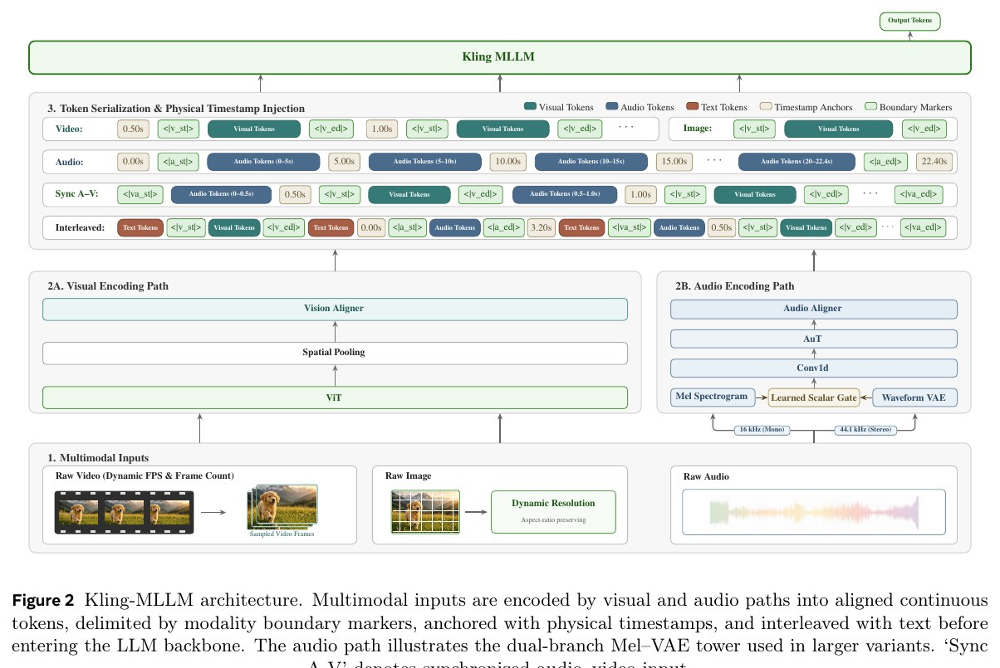
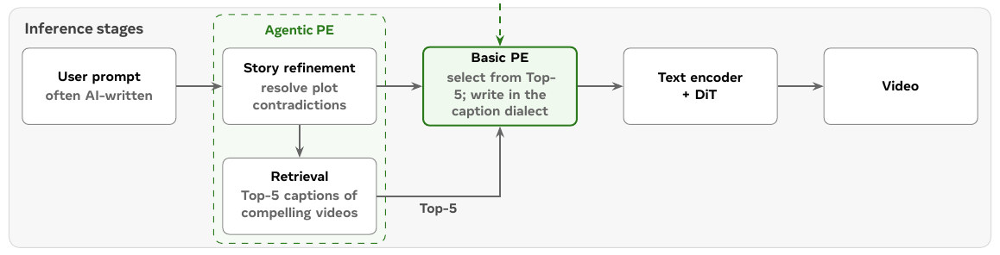

速览
这不是「发布一个新模型」的报告，而是一个底座 + 五类下游专精模型 + 一套评测方法论的经验总结。
五条要点
一个理解底座，专精出整条链
Kling-MLLM 统一五类输入，经任务后训练分化为 captioner / PE / TE / RM / 评测器§2.1。底座视频侧最强项是镜头运动与时空：397B 在 Camera Motion VQA 得 54.72，对比方最高 37.70表 5。
Caption 是「语义契约」，不是摘要
DiT 见到的样本远少于 LLM，所以要最大化「每秒视频的描述密度」§1。6 类信息规范 + 4 条写法 + 多专家流水线蒸馏成单次推理学生模型§3.1–3.2。Kling-Captioner-397B 声音召回 58.11 vs Gemini-4-Argon 29.38表 8。
任意相似视频对都能变训练数据
RGC 把一个当参考、一个当目标，写清「保留什么、改什么」，无需真实编辑过程§4.3。Kling-RGC-397B ViDiC Avg 78.89（Gemini-4-Argon 77.18），但 MRVBench 总分 90.31 仍低于 Gemini 91.22表 12。
PE：从好视频的 caption 反推用户 prompt
反向构造 + 忠实/合理/生动三验证器 + 文本级 RL + DiT 在环 RL + agentic 故事修复与检索，StoryEval 65.42 → 77.72表 13。DiT 在环 RL「抬下限、压上限」§5.3。
TE 靠感知训练，RM 先练「看得见」
TE 三步改造对 Qwen 基线 GSB 1.10 → 1.22 → 1.27表 14。RM 拆成可解释 GRM + 单次 prefill 多维打分的 DRM，DRM 内部 macro 77.86%，9 个维度中 8 个领先表 17 · §7.3。
架构：一个底座 + 一条理解链
先看 Kling-MLLM 本身，再看它怎样被专精到链上的各个模块。

相对「Qwen 底座 + 通用 VLM」改了什么
- 统一连续 token 接口：文本、视觉、声学嵌入在同一序列里，不量化到共享离散码本；模态边界 token 让多段媒体可放在任意位置§2.2。
- 视频带物理时间戳：帧率、帧数按时长和上下文预算动态选，覆盖全时长；每帧的视觉 token 块绑定真实时间戳§2.2。
- 两套音频塔，同一接口：小模型沿用 Qwen3-Omni 设计，16 kHz 单声道 → Mel → 13 token/s；大模型同时喂 16 kHz、128-bin、100 帧/秒的 Mel 和 44.1 kHz 波形给自研 VAE，VAE 特征插值对齐后经可学习标量门残差加到 Mel 分支，输出 25 token/s§2.2。
- 音频显式时间锚：每段音频首尾写开始/结束时间戳，并每 5 秒插一个绝对时间锚。动机是 LLM 不能可靠地把 token 序号换算成时间；用 Gemini API 做提示实验时，在 prompt 里给出总时长就能明显改善时间定位§2.2。
- 同步音视频合成一个元素：按帧时间顺序遍历，在每个视觉块前插入「上一帧之后、当前帧之前（含）」的全部音频 token；同时刻时音频在前§2.2。
示意：按原文图 1 的四列版式用文字重绘（裁图包里没有可用的图 1 原图）。虚线只表示「从 Kling-MLLM 专精而来」§1 · §2.1；各模块用哪个尺寸的底座，除 Captioner（35B-A3B / 397B-A17B）、RM（27B）外原文未披露。
| 下游模块 | 从哪里来 | 输出 / 用途 | 来源 |
|---|---|---|---|
| Kling-Captioner | Kling-MLLM-35B-A3B、397B-A17B + 定向后训练数据 | 生成导向的稠密音视频 caption（DiT 训练数据） | §3.5 |
| Kling-RGC | 在 Kling-Captioner 上用跨模态对应数据继续后训练 | 带参考指针与作用范围的 caption | §4.6 |
| Basic / Agentic PE | Kling-MLLM 专精；底座尺寸 原文未披露 | 把用户请求改写进 caption 分布 | §1 · §5 |
| Text encoder | Kling-MLLM + 稠密视频描述与感知任务适配；尺寸 原文未披露 | 多层融合的条件序列 Hcond | §6.2 |
| GRM / DRM | Kling-MLLM-27B，三阶段训练 | 可解释缺陷定位 / 快速多维打分 | §7.2 |
| 自动评测 | 综述：信号指标 + 专家模型 + MLLM checklist 判官 | 按任务的评测协议 | §8 |
数据：底座语料 + 五条下游数据线
全文没有给出任何语料总量或配比数字，但流程、过滤和标注规范写得很细。下面按「底座 → caption → RGC → PE → RM」展开。
4.1 已披露规模一览
| 项目 | 原文给出的 | 来源 |
|---|---|---|
| Kling-MLLM 训练总量（token / 样本） | 原文未披露 | — |
| 四阶段各自配比 | 只有定性描述：S1 全部音频；S2 音频与同步音视频占最大份额；S3 偏向音频、视频、音视频；S4 放各模态最高质量数据。具体比例 原文未披露 | §2.3 |
| 数据来源三类 | 公开数据 / Kling 任务数据 / agent 数据；各自占比 原文未披露 | §2.4 |
| Caption / RGC 训练集规模 | 原文未披露 | — |
| PE 检索上下文 | 每个请求取 Top-5 条精彩视频 caption | §5.4 |
| PE 文本验证打分 | 三项各 1–5 分；SFT 对必须三项全过（阈值 原文未披露） | §5.2 |
| RM Stage 1 回放 | 后续阶段保留 20% Stage 1 数据回放 | §7.2 |
| RM 标注语料规模 | 原文未披露（只说明字段：缺陷类别、时间区间、逐帧框、理由） | §7.2 |
因为没有比例，本页不画任何配比条形图。
4.2 底座语料：公开数据的三段式自动入库
所有来源统一成「对话式 schema」，保留媒体元数据与模态边界，一个 loader 就能拼出图、视频、音频、同步音视频和交错样本§2.4。公开数据走 AutoResearch → Auto Data Process → Auto Revise，修过的记录回流重新校验§2.4：
表 1 · 各模态的归一化与监督形式原文表 1
| 模态 | 转换时归一化与校验 | 代表性监督 |
|---|---|---|
| 文本 | 编码与语言检查、文档去重、对话轮次归一化 | next-token、指令跟随、推理 |
| 图像 | 解码与分辨率检查、感知去重、宽高比处理、OCR/元数据抽取 | 短/稠密 caption、VQA、OCR、grounding、计数、姿态 |
| 视频 | 解码检查、镜头切分、带时间戳抽帧、可选 OCR；音频送同步分支 | 时序 caption、事件与运动 QA、镜头理解、多镜头推理 |
| 音频 | 波形/声道归一化、切段、VAD 与信号质量检查、转写对齐 | ASR、音频 caption 与 QA、声学事件推理、时间定位 |
| 音视频 | 同步校验、构建共享时间戳 token 时间线 | 联合转写、跨模态 QA、grounding、caption |
| 交错媒体 | 保持文档/对话顺序、媒体引用检查、跨记录去重 | 多个异构媒体上的上下文 QA 与推理 |
来源：表 1。
Kling 任务数据 §2.4
- 世界知识：交错图文 + 受控的动作 / 声音 / 主体 / 场景分类体系
- 图像感知：多种文字外观与版式的中英 OCR、计数、grounding、带元数据描述、姿态
- 稠密图像 / 视频 caption：场景、主体、运动、风格、镜头行为、多镜头结构
- 编辑与参考理解：成对的 source–target 图像或视频，增 / 删 / 改指令，多参考条件
多模态 agent 数据 §2.4
- 通用：多步 API / 事务流、搜索与有据研究、软件工程与终端、结构化推理、安全日常助手
- 多模态：图像检索与推理、基于截屏的 GUI 交互、在长视频里搜证据的 agentic 视频理解、Blender 可控 3D 场景 / 相机 / 渲染
- 可用模型生成的指令、轨迹、回复构造或扩充，之后做一致性检查
4.3 Caption 数据：生成导向的语义契约
核心观察：caption 排行榜奖励「和参考像」，生成训练要的是忠实、完整、有时序、格式一致的结构化描述§3。还要防「会认不会说」：VQA 强不代表能自主说全§3。规范从下游生成器的可控因素和失败模式倒推：
| 信息族 | 必须写的元素 | 漏写 / 写错时下游的失败 |
|---|---|---|
| 主体与动作 | 不同实体、动作阶段、交互对象、结果状态 | 静态摆拍、角色互换、动作没完成 |
| 空间与构图 | 左右 / 前后关系、入画出画方向、景别、景深 | 运动反向、主体错位、构图失控 |
| 摄影与光 | 景别、视角、运镜、焦点转移、光向与光质、反差、色温 | 运镜千篇一律、风格好看但复现不了 |
| 时间与镜头 | 事件顺序、状态变化、镜头边界、时间戳、复现主体 | 写成逐帧清单、不连贯、意外切镜或定格 |
| 可见与可听文字 | 忠实 OCR、对白 / 旁白、环境声与动作声、音乐、时间锚 | 字拼错、幻听、音画事件错位 |
| 美学 | 具体质感、色板、媒介、风格、成片感 | 「cinematic」这类不可执行的空词 |
来源：表 6。主体、动作、时序是必填；OCR、语音、音效、多镜头只在输入支持时才写；短 caption 适合检索、稠密 caption 用于生成，两者混用必须有明确策略§3.1。
四条写法约定 §3.1
- 实体命名明确且一致：跨句跨镜头沿用同一判别性名词短语，不写可能有歧义的 he / it / the other person。
- 镜头时间戳当对齐信号：单调、经校验，与内容一一对应。
- 可见文字照抄：保留原字符和显著样式，不意译；漏写等于告诉模型「字是不受控纹理」。
- 音频按时间嵌入画面叙述；只有真的检查过音轨才激活音频字段。
五步生产流水线 §3.2
- 检查与路由：按内容类型、时长、运动、镜头密度、有无音频分配专家路径
- 保留感知证据：降采样、去黑帧、音频解码、OCR/ASR
- 专家出断言：通用视觉专家认主体场景，专项模型抽运镜、空间关系、光照、镜头边界
- 整合与冲突裁决：对照源证据解决冲突、统一术语、分配稳定实体名、去冗余
- 合取式质量门：准确、覆盖、多样性同时过阈值，并做跨模态、跨镜头一致性检查；被拒样本进按难度索引的错误池
串行流水线延迟太高，所以把输出蒸馏成单次推理的学生模型部署§3.2。
| 只优化这一项 | 典型捷径 | 下游后果 |
|---|---|---|
| 事实准确 | 不写不确定或复杂的属性 | 条件欠定 → 退回数据先验 |
| 语义覆盖 | 加看似合理但未经核实的细节 | 幻觉出实体、动作、关系、文字 |
| 有益多样性 | 不受控的同义词、诗化用语 | TE 分布碎片化 → 控制不稳 |
| 内部一致 | 套死模板、忽略局部细节 | 丢失动态状态变化 → 生成僵硬 |
来源：表 7。四个标准必须同时满足（合取）§3.3。
验收：原子事实 + 判官稳定性 + 下游验证 §3.3–3.4
- 评测单元是「有源可查的原子信息项」：检查候选 caption 是否正确表达预定义的关键事实及其时间范围，基本与措辞无关。
- 基准至少四个视角：内容有效性 / 生成专属维度（动作进程、空间方向、摄影、构图、光、时序、转场、OCR、语音、声音）/ 接口合规（解析率、时间戳有效性、术语合规、标记有效性）/ 难度切片（时长、镜头数、实体数、事件数、运动速度、OCR 密度、音频复杂度、领域）。
- 自动判官上线前要测：同一 caption 的判分方差、在分层子集上对齐人工、跨模型族排序稳健性；控制 caption 长度，防止把啰嗦当覆盖。判官模型、prompt、解码参数、预处理一起版本化。
- 下游：匹配 caption 长度与已核实事实数；做定向干预（例如只改运镜描述）看能力是否转移；小规模微调或冻结生成器做评估，再上大规模训练。
4.4 RGC 数据：任意相似视频对 → 参考条件训练样本
RGC caption = 参考指针 + 补充描述（参考给不了的事实） + 有范围的保留 / 改动记录§4.1。难度主要取决于参考之间是否容易区分、属性绑定有多复杂，不只是参考数量§4.1。
关系监督§4.3：只要两段视频在画面或声音上足够相似，就一个当参考、一个当目标，标注「共享什么、要改什么」。不需要来自编辑流程，也不需要原始编辑指令；相似可以只覆盖部分内容（同一动作不同人、同一说话人不同台词）。同一目标可配多个参考（和 A 共享主体、和 B 共享动作），一段视频能产出多条参考条件样本，加上它的标准 caption。
三条合取契约 表 10 · §4.2
- Scoped binding：指针要说明源证据、目标实体、授权属性、时间范围。「Use image 2」不够，要写「PERSON_1 的身份和服装取自 IMG_2；背景不参考」。
- Residual sufficiency：参考给不了的生成相关事实必须写出；「同参考」这类含糊说法会漏掉动作、运镜、时间、音频。
- Authority consistency：交给参考的属性，文本不再另给不兼容的值；要覆盖必须显式声明范围。
统一表示（四件套） §4.4
- 紧凑的参考登记表：稳定 ID、模态、角色、允许范围
- 用登记 ID 写的目标视频基础描述
- 编辑与续写的显式保留 / 修改记录
- 镜头或事件时间戳，把绑定连到生效区间
标准 caption 被当作「零参考」特例，因此大量标准 caption 数据和较少的多参考数据可以共用 captioner、TE、PE 和校验器。
RGC 七步流水线 + 表 11 各参考模态的权威与歧义§4.5 · 表 11
- 给任务和参考定型：每个输入提供身份 / 外观 / 运动 / 镜头 / 声音 / 风格 / 指令中的哪一项；记录模态、质量、时间范围、允许迁移的范围。
- 目标与参考分别描述：保留标准目标描述；并行从每个参考抽实体、属性、动作、镜头、音频事件，不预设对应关系。
- 提出并验证绑定：检测、分割、跟踪、OCR/ASR、运动特征 + MLLM 推理，跨视角、跨时间联合验证候选匹配。
- 判定保留与剩余充分性：区分请求的改动、保留属性、附带变化、证据不足的部分。
- 裁决权威与冲突：建「实体 × 属性 × 时间」表，每格标明以哪个输入为准；在写成文字之前裁决专家冲突。
- 按统一格式一次写成：插入有范围的指针，保留参考未提供的目标事实；不要多轮串行改写导致反复改名、重绑。
- 确定性 + 语义门：指针有效性、绑定覆盖、禁止越界迁移、文本–参考冲突、时间对齐、四项 caption 标准。
| 参考 | 典型权威 | 主要歧义 | caption 侧应对 |
|---|---|---|---|
| 图像 | 身份、外观、物体细节、场景/风格 | 迁移哪个实体、图像的哪一部分 | 绑定显式 ID 与范围；写明目标动作、位置、镜头、变化 |
| 视频 | 运动、状态、表演、连续性、镜头 | 时间对齐；迁移还是保留；切点 | 声明源区间与角色；新事件和保留内容加时间戳 |
| 音频 | 音色、对白、节奏、音效 | 说话人/声源归属与音画同步 | 把说话人/事件 ID 绑到可见动作；不臆造看不见的画面 |
| 文本 | 编辑指令、脚本、名字、约束 | 与源冲突或过度指定 | 当作类型化的改动规格；在属性层面裁决权威 |
| 混合 | 以上联合组合 | 权威重叠、重复、矛盾 | 先建属性级权威表再写最终 caption |
来源：§4.5、表 11。
4.5 PE 数据：从精彩视频的 caption 反向构造
反向构造 §5.1
- 从真实视频的 caption 出发，由 teacher 写出「可能产生它的用户 prompt」，PE 学 prompt → caption。
- 合成 prompt 跟随真实流量统计，不跟 teacher 的文风：每对从日志查询中采样目标长度、语言混合、语域、错字率、省略哪些槽位；参考、多镜头、显式排除按观测频率加入。
- 泄漏 caption 骨架的 prompt 拒掉（例如按 caption 顺序列出每个动作阶段），否则 PE 学会抄而不是补全。
- 排除项改写成正面描述：「no people」→「空旷街道、人行道无遮挡」；没有正面等价物的排除送 negative 条件字段或采样时拒绝。
源 caption 选「精彩视频」 §5.1
- 随机抽训练视频当源，PE 会把所有请求扩写成「合格但平」的描述：构图雷同、光照平均、动作平淡。
- 改从本身就精彩的视频取：专业拍摄、有清晰戏剧节拍的表演、刻意设计运镜的片段，用美学分、运动分和 §5.2 的生动度指标筛选。
- 领域与长度配额防止塌缩到少数类型。
- 结论：PE 继承目标 caption 的「性格」，在数据层面解决比改模型或目标更早。
F / R / V 文本验证器：既当 SFT 过滤器，也当 RL 奖励 §5.2
- Faithfulness：判官把用户 prompt 拆成原子需求清单（实体、属性、数量、动作、空间关系、镜头指令、引号文字、音频、参考绑定、排除项），逐项标满足 / 违反 / 未处理；违反比遗漏扣得重，与需求矛盾的添加算违反。
- Reasonableness：逐句增量建空间图（相对位置、接触、包含、视角随时间）和交互图（施事、动作、受事、前置条件、结果状态），新句子与两图及常识对照，冲突扣分并指出是哪句引入的。例：「把杯子放桌上走到门口，开门时喝一口」——杯子还在桌上。
- Vividness：按表演、运镜、光色、节奏、声音设计抽表达元素，与从精彩视频和摄影资料整理的专业技法库匹配；每轴去重并封顶，且只计通过合理性检查的元素，堆术语不涨分。
- 检索增强训练对用严格拒绝采样：引入了既不来自用户 prompt、也不是从检索 caption 有意且兼容借用的实体 / 属性 / 事件就拒；还刻意放入「5 条检索全不相关、目标忽略它们」的样本§5.4。
4.6 RM 数据：先治「赢家缺陷没人标」
三类监督源（GRM） §7.2
- 开源数据集的 train split（val / test 从不使用）
- 人工标注的取证语料：缺陷类别 + 时间区间 [tstart, tend] + 逐帧框 + 理由
- 由 rubric 生成的 checklist VQA，在看不到偏好标签的情况下写成
Stage 1 感知数据：自然片段与其 VAE 重建版配对做判别；从 RL 对和单视频缺陷日志生成模板化缺陷探针§7.2。
标注偏差与对策 §7.1–7.2
- 以输家为中心的归因：标注员会可靠地写下输家的决定性缺陷，但常漏标赢家的缺陷；把未标注的赢家当干净负例，或从带元数据捷径的候选对比里推标准，会污染决策边界。
- 维度和总偏好强耦合 → 每个 L2 维度单独打分。
- 只罚伪影会奖励静止：慢或冻住的视频错误少，所以运动幅度单列为维度，在 DiT RL 中做配重。
- DRM 用投票聚合的软标签；音视频 checklist 每视频多个原子问题；随机抽一部分 checklist 项配每 1 秒一个二值字段标出事件发生时刻§7.2。
训练配方
学习率、batch、步数、序列长度具体值原文未披露；下面只列原文写明的冻结关系与少数比例。
5.1 Kling-MLLM 四阶段课程
音频初始化
- 训练
- 音频塔
- 冻结
- ViT · LLM
- 序列
- 短
数据全是音频：中英及多语 ASR、口语 QA、语音续写、指令跟随；环境声、音乐、非语言发声、说话人/口音；长录音提供长上下文。
联合多模态
- 训练
- 全部三模块
- 序列
- 短
音频与同步音视频占最大份额；图、视频、文本以较小比例保留防遗忘（稠密 caption、编辑指令推断、多图组合、计数、OCR、图表等）。
时序容量扩展
- 训练
- 全部
- 序列
- 长
偏向音频、视频、音视频：时间定位、多镜头叙事、异常动作、播放速度敏感的运动；另加镜头边界理解、视觉伪影定位、参考条件下的生成 prompt 改写。
长上下文巩固
- 训练
- 仅 LLM
- 冻结
- 两个模态塔
- 序列
- 长
各模态最高质量数据放在这里：长视频检索、多段时间定位、长音频事件定位与分段、音视频交叉推理。
几个大数据源按阶段切分，课程是「模态耦合 + 任务多样性」的递进，不是四份互不相交的语料§2.3。另外，合并 Stage 1 与 Stage 4 的 checkpoint 优于单独任一个（无数字）§2.3。
5.2 Basic PE 三阶段 + Agentic PE

Caption 对齐 SFT
- 精彩视频 caption 当目标
- 按真实流量格式反向构造的 prompt
- 只用 F/R/V 三项全过的数据对
- RAG 对经拒绝采样
文本级 RL（GRPO）
- 奖励 = F / R / V 三分组合
- 忠实度做门：违反显式需求则生动度不计分
- 可加分布项，惩罚超出 caption 长度与词表范围
- 不渲染视频，便宜，可覆盖大量 prompt
DiT 在环 RL
- PE → 冻结 TE → 冻结 DiT，每 prompt 多个改写各渲染一条
- 组相对策略梯度；奖励全来自 DRM：视觉质量、运动质量、文本对齐（checklist）
- 从文本级 RL checkpoint 起步，prompt 数远少于 Stage 2
故事修复三规则§5.4：引号对白、数量、参考绑定、指定运镜等硬约束不动，除非彼此冲突（此时做最小改动并记录）；只做局部最小编辑（重排、合并、删事件、修属性），不加新角色、不改前提；输出先过合理性判官和「非冲突部分」的忠实度清单。找不到连贯改法时原样透传并打冲突标记，交产品层询问用户。
5.3 Text encoder
做法 §6.1–6.4
- 筛选：在最小对比描述上直接探测 prefill 隐状态序列，纯文本即可过滤候选骨干与 checkpoint，不用先训 DiT。
- 适配：在 Kling-MLLM 上用稠密视频描述与感知理解任务继续训练。
- 多层：聚合多个编码层，而不是只取单层。
- 稳定：抑制可学习融合模块的层权重在扩散训练各阶段漂移。
没写的 原文未披露
- TE 使用的 Kling-MLLM 尺寸、取哪些层
- 融合模块结构与「稳定化」具体方法（正文只引 [22][23]）
- 对比基线「Qwen text encoder」的具体型号
依据的观察：多模态预训练优于纯文本 LLM，但宽泛多任务指令微调无可靠收益，偏推理的后训练甚至会损害 prefill 隐状态（引自 [22]）§6.2。
5.4 奖励模型：三阶段（起点 Kling-MLLM-27B）
视觉适配
- ViT + aligner LLM 冻结
- VAE 重建判别 + 模板化缺陷探针
- 运动 / 伪影维度用密集帧；VQ 维度用原生高分辨率稀疏帧
- 后续阶段保留 20% 回放
GRM
- 冷启动 SFT：结构化批评 + 缺陷证据管（区间 + 逐帧框）+ 序数评分；评分的概率加权期望当标量分
- 视觉:LLM 学习率比 1 : 10，20% Stage 1 回放
- RLVR：GRPO，每视频 G = 8 rollouts；奖励受格式有效性门控，含评分校准、缺陷有无、标签集 F1、时空 mIoU 四项；未匹配的真值缺陷扣分
DRM（由 GRM 初始化）
- 决策头预热：冻结骨干只训决策头（通用多选语料），再全量训视频批评与时间定位；软交叉熵 + 序数字段加 RPS
- 点式 + 成对联合 SFT 与 TA grounding
- 对称校准：worse / better 字段对称 KL + 交换顺序的 Bradley–Terry 损失；推理时置信门只对低 margin 样本跑交换顺序的第二遍
DRM 读出§7.2：一次 prefill 回答 K 个问题（分类体系缺陷检查、原子 prompt 验证项、成对维度比较）；决策头就是 LM head 里选项字母对应的行，在占位符位置读出，不加参数（读出方式改自 Intern-Decision）。一个 prefill 放一或两个视频；占位符固定在前缀里，前面的答案不会泄露给后面的字段，再配合选项字母随机化、字段置换、只在占位符算 loss。
节选自原文 §7.2 的两视频模板（省略部分字段）。每个占位符对该字段选项字母的 logits 归一化，得到连续分数和概率。
评测
底座用 LMMs-Eval（已集成基准用默认 prompt）§2.5；下游模块多为内部集或 Kling 团队参与的基准。注意对比对象在不同表之间会变。
三图横轴都从 0 起。† / ‡ 含义见 6.5。
6.1 底座 Kling-MLLM：视频（精选列）
| 模型 | LongVideo Bench ↑ | VSI- Bench ↑ | DSI- Bench ↑ | Event- Bench ↑ | Motion- Bench ↑ | TimeLens Overall ↑ | CameraMotion VQA ↑ | VidCapBench Acc | Cov ↑ |
|---|---|---|---|---|---|---|---|---|
| Qwen3-VL-32B | 67.61 | 64.16 / 61.5 | 53.36 | 74.89 | 67.32 | 52.16 | 26.71 | 20.01 | 87.49 |
| Qwen3.5-Omni-Plus (DashScope) | 69.26 | 60.67 | 59.36 | 76.62 | 71.55 | 33.31 | 37.70 | 18.29 | 92.60 |
| Qwen3.5-397B-A17B | 68.44 | 58.68 | 58.68 | 76.16 | 68.62 | 38.74 | 32.90 | 16.44 | 90.34 |
| Doubao2.0-Lite (thinking, high) | 75.17 | 53.03 | 58.62 | 72.69 | 71.98 | 62.35 | 35.42 | 20.08 | 91.36 |
| Kling-MLLM-35B-A3B | 73.37 | 75.07 | 57.94 | 77.31 | 70.98 | 60.64 | 42.02 | 19.87 | 85.59 |
| Kling-MLLM-27B | 73.22 | 73.20 | 62.86 | 76.35 | 71.83 | 58.25 | 47.23 | 19.35 | 88.20 |
| Kling-MLLM-397B-A17B | 72.48 | 74.77 | 65.52 | 78.58 | 73.94 | 60.55 | 54.72 | 19.51 | 93.81 |
「a / b」= 本文评测值 / 开源模型开发者报告值；「|」在 VidCapBench 表示 Accuracy | Coverage§2.5。原文结论：397B 领先 DSI-Bench、Event-Bench、MotionBench、Camera Motion VQA、VidCapBench coverage 五列，35B-A3B 领先 VSI-Bench；Doubao2.0-Lite（thinking）领先 LongVideoBench、MME-VideoOCR、ShortVid-Bench、TimeLens 全部和 VidCapBench accuracy§2.5。表中省略了 Qwen3-Omni、MiniCPM-o-4.5、Gemma-4-31B-IT 三行和 MVBench 等列。
表 2 / 3 / 4 · 音频、音视频、交错、图像（全量）原文表 2–4
表 2 · 音频（LATBench 的「|」= 中文 | 英文）
| 模型 | LibriSpeech clean ↓ | other ↓ | WorldSense ↑ | TREA ↑ | LAT mIoU ↑ | R@0.3 ↑ | R@0.5 ↑ | R@0.7 ↑ | FENSE ↑ |
|---|---|---|---|---|---|---|---|---|---|
| Qwen3-Omni-30B-A3B-Instruct | 1.32 / 1.22 | 2.66 / 2.48 | 46.03 | 71.0 | 14.8|15.8 | 21.4|26.4 | 12.4|16.0 | 7.0|7.0 | 28.4|31.0 |
| MiniCPM-o-4.5 | 1.54 / 1.4 | 3.79 / 2.8 | 44.99 | 54.8 | 3.0|5.2 | 4.0|7.4 | 2.1|3.7 | 0.8|2.0 | 41.1|41.9 |
| Qwen3.5-Omni-Plus (DashScope) | 1.32 | 3.14 | 63.90 | 87.7 | 60.2|51.2 | 81.1|71.1 | 63.2|54.5 | 40.5|33.8 | 64.2|53.5 |
| Doubao2.0-Lite (non-thinking) | 1.28 | 2.41 | 53.94 | 71.5 | 53.1|53.2 | 73.9|73.2 | 58.9|57.9 | 38.2|37.2 | 57.4|48.7 |
| Doubao2.0-Lite (thinking, high) | 1.35 | 2.55 | 66.77 | 79.2 | 52.6|55.1 | 72.4|77.5 | 59.1|61.9 | 39.0|37.8 | 58.7|42.1 |
| Kling-MLLM-35B-A3B | 1.68 | 3.30 | 61.92 | 93.0 | 58.8|51.4 | 81.8|71.2 | 61.3|55.1 | 38.7|35.4 | 66.5|72.0 |
| Kling-MLLM-27B | 1.32 | 2.93 | 61.79 | 93.2 | 61.0|62.7 | 82.0|87.7 | 66.2|71.9 | 42.2|43.8 | 67.6|70.5 |
| Kling-MLLM-397B-A17B | 1.18 | 2.71 | 63.56 | 91.2 | 65.0|61.7 | 86.4|85.4 | 68.1|68.2 | 47.4|43.4 | 70.8|68.9 |
表 3 · 音视频与交错
| 模型 | OmniBench ↑ | v-SALMONN Miss ↓ | Halluc. ↓ | Total err ↓ | UGC-VideoCap ↑ | OmniCap-IF CSR ↑ | ISR ↑ | IV-Bench ↑ | MVU-Eval ↑ |
|---|---|---|---|---|---|---|---|---|---|
| Qwen3-Omni-30B-A3B-Instruct | 60.35 | 36.32 | 16.87 | 53.20 | 80.01 | 65.87 | 9.06 | 35.02 | 56.41 |
| MiniCPM-o-4.5 | 52.04 | 33.37 | 15.35 | 48.72 | 78.45 | 70.84 | 11.69 | 24.70 | 47.81 |
| Qwen3.5-Omni-Plus (DashScope) | 67.61 | 17.47 | 21.67 | 39.13 | 87.78 | 75.90 | 18.95 | 53.31 | 60.64 |
| Doubao2.0-Lite (non-thinking) | 57.79 | 28.20 | 17.26 | 45.46 | 84.22 | 76.56 | 20.29 | 43.48 | 60.42 |
| Doubao2.0-Lite (thinking, high) | 70.18 | 19.47 | 19.97 | 39.45 | 91.05 | 78.21 | 21.62 | 61.41 | 63.71 |
| Kling-MLLM-35B-A3B | 61.15 | 21.63 | 18.55 | 40.19 | 85.65 | 81.02 | 25.39 | 54.23 | 61.18 |
| Kling-MLLM-27B | 62.57 | 22.47 | 18.02 | 40.49 | 84.61 | 81.55 | 26.06 | 57.31 | 61.02 |
| Kling-MLLM-397B-A17B | 69.38 | 20.00 | 17.07 | 37.07 | 88.21 | 82.75 | 28.13 | 61.05 | 63.16 |
表 4 · 图像（TextPecker：+ 越高越好，− 越低越好）
| 模型 | MMBench EN ↑ | MMBench CN ↑ | OCRBench ↑ | TP EN+ ↑ | EN− ↓ | CN+ ↑ | CN− ↓ | PerceptionBench ↑ |
|---|---|---|---|---|---|---|---|---|
| Qwen3-Omni-30B-A3B-Instruct | 87.29 | 83.68 | 86.80 | 0.032 | 0.078 | 0.047 | 0.041 | 32.17 |
| MiniCPM-o-4.5 | 85.22 | 82.99 | 61.00 / 87.6 | 0.094 | 0.099 | 0.024 | 0.085 | 29.37 |
| Gemma-4-31B-IT | 87.11 | 87.11 | 84.70 | 0.252 | 0.054 | 0.187 | 0.072 | 47.23 |
| Qwen3-VL-32B | 87.63 | 86.17 | 84.80 / 89.5 | 0.159 | 0.166 | 0.171 | 0.069 | 33.97 |
| Qwen3.5-Omni-Plus (DashScope) | 91.24 | 88.75 | 85.20 | 0.106 | 0.060 | 0.072 | 0.038 | 37.50 |
| Qwen3.5-397B-A17B | 90.03 / 93.7 | 89.09 | 83.70 / 93.1 | 0.187 | 0.078 | 0.087 | 0.044 | 47.47 |
| Doubao2.0-Lite (non-thinking) | 89.60 | 87.54 | 82.90 | 0.430 | 0.071 | 0.347 | 0.045 | 44.13 |
| Doubao2.0-Lite (thinking, high) | 91.84 | 89.26 | 84.50 | 0.453 | 0.078 | 0.371 | 0.049 | 53.93 |
| Kling-MLLM-35B-A3B | 88.40 | 86.94 | 84.90 | 0.649 | 0.092 | 0.774 | 0.053 | 39.00 |
| Kling-MLLM-27B | 87.29 | 87.54 | 83.10 | 0.536 | 0.103 | 0.702 | 0.049 | 40.90 |
| Kling-MLLM-397B-A17B | 90.55 | 89.52 | 87.20 | 0.660 | 0.090 | 0.782 | 0.036 | 48.63 |
来源：表 2–4。原文小结：图像、语音识别、视频 caption、交错理解上各家互有胜负；397B 最明显的优势在视频感知与时序、音频时间定位、音视频 caption§2.5。
6.2 Kling-Captioner
| 模型 | VidCapBench | UGC-VideoCap | Motion（内部） | Camera（内部） | Sound（内部） | |||||||||
|---|---|---|---|---|---|---|---|---|---|---|---|---|---|---|
| Acc. | Pre. | Cov. | Con. | Audio | Visual | Detail | Avg. | Pre. | Rec. | Pre. | Rec. | Pre. | Rec. | |
| Gemini-4-Argon | 16.20 | 51.66 | 85.63 | 10.69 | 79.80 | 87.69 | 85.67 | 84.38 | 64.62 | 45.78 | 40.83 | 76.22 | 79.74 | 29.38 |
| Doubao2.1-Lite (non-thinking) | 17.20 | 51.78 | 87.47 | 8.32 | 82.88 | 90.67 | 88.81 | 87.45 | 62.87 | 56.31 | 28.37 | 61.46 | 73.18 | 26.79 |
| Doubao2.1-Lite (thinking, high) | 20.23 | 56.44 | 94.15 | 3.36 | 90.37 | 96.10 | 94.97 | 93.81 | 64.15 | 59.02 | 32.89 | 64.61 | 77.56 | 31.69 |
| Kling-Captioner-35B-A3B | 21.84 | 59.28 | 94.81 | 3.56 | 92.83 | 96.46 | 95.90 | 95.06 | 67.28 | 64.75 | 52.18 | 80.93 | 78.52 | 55.83 |
| Kling-Captioner-397B-A17B | 21.70 | 60.51 | 96.05 | 3.19 | 93.41 | 96.70 | 96.38 | 95.50 | 68.11 | 67.42 | 54.82 | 83.43 | 80.21 | 58.11 |
来源：表 8。表头未标方向；Con. 列方向原文未说明，本页不标最佳。对比对象换成了 Doubao2.1-Lite（底座表用的是 2.0-Lite）。Motion / Camera / Sound 为内部集，不可复现。
6.3 Kling-RGC
| 模型 | ViDiC | MRVBench | |||||||
|---|---|---|---|---|---|---|---|---|---|
| Avg. | Diff. | Sim. | KP-Cov | VQA | Ref-Tag-R | Ref-Bind | Subj-F1 | MRVScore | |
| Gemini-4-Argon | 77.18 | 75.51 | 81.86 | 93.31 | 74.41 | 97.23 | 93.56 | 90.37 | 91.22 |
| Doubao2.1-Lite (non-thinking) | 69.24 | 65.27 | 80.33 | 89.45 | 68.09 | 75.43 | 93.35 | 49.45 | 78.10 |
| Doubao2.1-Lite (thinking, high) | 75.63 | 74.96 | 77.49 | 90.75 | 71.55 | 81.41 | 93.98 | 56.86 | 81.32 |
| Kling-RGC-35B-A3B | 77.57 | 75.59 | 83.06 | 94.12 | 76.01 | 94.80 | 92.88 | 84.51 | 88.57 |
| Kling-RGC-397B-A17B | 78.89 | 76.29 | 86.12 | 95.18 | 76.34 | 95.28 | 94.85 | 85.24 | 90.31 |
来源：表 12。MRVBench 上 Ref-Tag-R、Subj-F1、MRVScore 三列 Gemini-4-Argon 更高；原文表述为「highly competitive」§4.6。
6.4 PE 组件累加
横轴从 0 起，差距看起来小是真实比例。行是累加的：每行在上一行基础上加一个组件§5.5。
| 设置 | Faithfulness | Reasonableness | Vividness | StoryEval | T2AV- Compass | AVE- Compass | MultiRef- Compass | |||
|---|---|---|---|---|---|---|---|---|---|---|
| Avg. | ≥4 (%) | Avg. | ≥4 (%) | Avg. | ≥4 (%) | |||||
| Basic PE | ||||||||||
| SFT，随机源 caption | 4.02 | 75.42 | 3.95 | 69.17 | 3.72 | 62.33 | 65.42 | 70.15 | 56.2 | 4.6137 |
| + 精彩视频源 | 4.00 | 74.92 | 3.92 | 68.08 | 4.03 | 72.58 | 66.87 | 70.60 | 56.7 | 4.6224 |
| + F/R/V 数据验证 | 4.27 | 80.83 | 4.18 | 74.33 | 4.11 | 75.08 | 71.93 | 73.07 | 57.9 | 4.6591 |
| + 文本级 RL | 4.45 | 86.67 | 4.31 | 79.25 | 4.25 | 79.83 | 75.58 | 75.34 | 58.4 | 4.7012 |
| + DiT 在环 RL | 4.38 | 83.50 | 4.42 | 83.67 | 4.23 | 81.42 | 76.46 | 75.91 | 59.3 | 4.7163 |
| Agentic PE + Basic PE | ||||||||||
| Hailuo IR（替代 agentic） | 4.19 | 77.17 | 4.51 | 85.83 | 4.21 | 80.08 | 73.38 | 74.62 | 58.1 | 4.6987 |
| Gemini 4 Argon（替代 agentic） | 4.34 | 81.75 | 4.57 | 88.58 | 4.30 | 83.17 | 75.73 | 75.37 | 58.8 | 4.7098 |
| Agentic，随机 few-shot + 反思 | 4.43 | 85.25 | 4.48 | 85.50 | 4.22 | 81.33 | 76.79 | 76.12 | 59.5 | 4.7142 |
| + 故事修复 | 4.41 | 84.58 | 4.67 | 91.92 | 4.26 | 82.25 | 77.53 | 76.03 | – | 4.7249 |
| + 检索（Top-5） | 4.36 | 82.17 | 4.65 | 91.42 | 4.44 | 87.33 | 77.72 | 75.68 | – | 4.7158 |
来源：表 13。文本指标在留出的真实用户 prompt 上计算，1–5 分均值与 ≥4 分占比（代表可直接使用）。StoryEval 为 7 项均值；T2AV-Compass 为 IF 与 Realism 均值；AVE-Compass 为 Editing Intent、Fidelity Preserving、Realism 均值；MultiRef-Compass 为 IF 与 RC 均值§5.5。「–」= 原文未给出。注意：DiT 在环 RL 让 faithfulness 从 4.45 降到 4.38；检索让 faithfulness、T2AV、MultiRef 小幅回落。
6.5 Text encoder 与奖励模型
| Kling-MLLM TE 配置（相对同一 Qwen TE 基线） | Overall | Instruction Following | Aesthetics |
|---|---|---|---|
| 多模态适配 | 1.10 | 1.04 | 1.11 |
| + 多粒度条件 | 1.22 | 1.11 | 1.22 |
| + 条件稳定 | 1.27 | 1.14 | 1.25 |
来源：表 14。指标 (G+S)/(S+B)，大于 1.00 为净收益；同一 DiT、数据流、训练步数，在分层内部集上做成对人评§6.5。G / S / B 原始计数与样本量 原文未披露。
| 模型 | Avg | VQ | MQ | Consistency | TA | ||||||
|---|---|---|---|---|---|---|---|---|---|---|---|
| Macro | Micro | Content Integrity | Aesthetics | Basic Motion | Motion Aesth. & Narr. | Magnitude | Input Image | Multi-Shot | Basic Prompt | Multi-Shot Prompt | |
| Gemini-3.8-Flash† | 67.59 | 67.13 | 66.27 | 67.03 | 61.99 | 69.81 | 88.89 | 75.00 | 58.93 | 47.10 | 73.33 |
| Gemini-4-Argon† | 73.54 | 72.59 | 72.78 | 76.92 | 65.42 | 72.96 | 85.71 | 75.00 | 66.07 | 60.30 | 86.67 |
| GRM | 74.72 | 73.32 | 75.15 | 79.67 | 70.40 | 75.47 | 93.65 | 72.50 | 71.43 | 65.30 | 68.89 |
| DRM‡ | 77.86 | 75.53 | 78.11 | 81.32 | 72.27 | 78.62 | 96.83 | 77.50 | 75.89 | 66.90 | 73.33 |
来源：表 17，内部成对偏好准确率（%），覆盖 10 个 L2 维度中的 9 个（不含 1.1 清晰度与压缩）§7.3。† 通过内部 API 网关调用；同一 Gemini 模型换网关 macro 最多相差 1.8 分。‡ 运动类维度判断时不给 prompt，其余维度给 prompt。GRM → DRM macro +3.14推算（原文写 3.1）。
| 模型 | VideoScore-Bench-v2 | VideoPhy2-test | VideoGen-RewardBench |
|---|---|---|---|
| 提示词驱动的 MLLM | |||
| Gemini-3.8-Flash | 36.90 | 47.80 | 54.37 |
| Gemini-4-Argon | 33.60 | 43.70 | 56.00 |
| 视频奖励 / 打分模型 | |||
| VideoReward | – | 31.33 | 59.69 |
| UnifiedReward | 25.07 | 22.02 | 53.31 |
| VideoPhy2 | 22.35 | 37.64 | 30.75 |
| VideoScore1.1 | 38.41 | 27.95 | 16.79 |
| VideoScore2 | 44.35 | 33.58 | 51.53 |
| Dover | 34.00 | 28.21 | 54.27 |
| Ours | |||
| GRM | 51.60 | 38.53 | 55.24 |
| DRM | 52.00 | 44.23 | 57.33 |
来源：表 18（准确率 %）。橙框标出的两格比 DRM 高：VideoPhy2-test 上 Gemini-3.8-Flash 47.80 > 44.23，VideoGen-RewardBench 上 VideoReward 59.69 > 57.33。DRM 只在 VideoScore-Bench-v2 上全表第一。
新在哪
只列能在原文里核对、且不只是常规工程的点。
Caption 质量的「合取验收 + 下游裁决」体系
把 caption 的四个标准定义为必须同时满足，并逐一列出单独优化每个标准会走的捷径（表 7）；评测单元换成有源可查的原子事实，要求控制长度、判官版本化，最终以生成器效果为准§3.3–3.4。
相比只报 VidCapBench 分数的做法，它给出的是一套可以落地执行的验收规范。
RGC 的关系监督：相似视频对即训练样本
不依赖编辑流程或原始指令，用「范围绑定 / 剩余充分 / 权威一致」三条契约把任意相似视频对写成参考条件 caption，一个目标可配多个参考§4.2–4.3。
直接扩大了参考生成与编辑数据的来源；但原文没有给出这类数据的量和单独消融。
PE 的反向构造 + 文本先行的验证器
从精彩视频 caption 反推符合真实流量统计的 prompt（含错字率、省略槽位），拒掉泄漏骨架的样本；用空间图 / 交互图做合理性判分，先在文本层完成 RL，再上 DiT 在环 RL§5.1–5.3。表 13 给出了逐项累加结果。
附带一个坦率的负面观察：DiT 在环 RL 抬下限、压上限§5.3。
DRM：前缀里决策，一次 prefill 多维打分
占位符固定在前缀、读选项字母 logits，不加参数；两视频同 prefill 的点式 + 成对字段；对称 KL + 交换顺序 BT 损失 + 置信门，用接近单次推理的延迟达到多次推理的准确率§7.2。
读出方式改自 Intern-Decision [18]；本文新增的是对称校准、门控推理和视频场景的字段设计。
音频显式时间锚与同步音视频序列化
每 5 秒一个绝对时间锚 + 首尾时间戳；同步音视频按帧时间把音频 token 插在视觉块前；大模型的 Mel + 波形 VAE 双分支经标量门融合§2.2。
这部分没有单独消融；动机来自 Gemini API 上的提示实验（正文没给数字）。
对图像编辑数据 / 评测 / caption 的启示
这篇讲的是视频，但「caption 是生成器的语言」「RGC 的保留 / 改动契约」「编辑评测的乘法式打分」几乎可以直接搬到图像编辑。每条先写论文怎么做，再给一条迁移建议（不是论文内容）。
C1规范从生成器的失败模式倒推
论文：6 类信息族，每类都写明「漏写时生成器会怎么坏」，例如左右关系 → 运动反向，美学空词 → 不可执行表 6。
迁移建议，不是论文内容：为编辑 caption 建一张同样的表：编辑区域 / 对象、保留属性、左右与遮挡、光照一致性、文字内容、风格；每一行配上该维度在当前模型上的典型失败 case，作为标注规范和 badcase 归因的共同索引。
C2实体命名稳定 + 文字照抄
论文：同一实体跨句跨镜头用同一判别性名词短语、避免代词；可见文字保留原字符和样式，不意译§3.1。
迁移建议，不是论文内容：多主体编辑指令里固定使用「左侧穿红外套的女人」这类判别性称呼，全条不换说法；文字编辑类样本把原文字和目标文字逐字写进 caption，并用 OCR 自动校验，不一致就打回。
C3四个标准合取 + 控制长度
论文：单独优化准确会漏写、单独优化覆盖会幻觉、单独优化多样性会让 TE 分布碎片化、单独优化一致性会模板化表 7；判官评测要控制 caption 长度§3.3。
迁移建议，不是论文内容：caption 版本对比时同时报原子事实的 precision / recall、术语合规率和长度分桶结果；只在某一个长度桶里涨分的新版本不予采纳。
C4多专家出断言、整合层裁决、再蒸馏
论文：通用专家 + 运镜 / 空间 / 光照 / 镜头边界专项模型 → 对照源证据裁决冲突 → 合取质量门 → 被拒样本进按难度索引的错误池 → 蒸馏成单次推理学生§3.2。
迁移建议，不是论文内容：编辑数据的 diff caption 也拆成「区域检测 / 光照判断 / OCR / 通用 VLM」几路断言后再合并；被拒样本按失败维度入池，用于定向补数据，而不是直接丢弃。
D1相似对即编辑对
论文：任意两段足够相似的视频，一个当参考、一个当目标，写清共享什么、要改什么，不需要编辑流程和原始指令§4.3。
迁移建议，不是论文内容：从图库挖近重复对（同场景不同时刻、同商品不同颜色、同人不同姿态），用 VLM 写「保留 X、把 Y 改成 Z」作为编辑指令；入库前过一遍保留区域的像素或特征一致性检查，过滤掉相机移动过大的对。
D2权威一致：文本别重述参考已经决定的东西
论文：交给参考的属性，文本不再给不兼容的值；用实体 × 属性 × 时间的权威表裁决后一次写成§4.2 · §4.5。
迁移建议，不是论文内容：编辑指令只写改动和显式覆盖的范围，不再重新描述源图里的身份、服装等细节；多参考编辑先生成一张「属性 → 来源图」的表，再据此写指令，减少属性串到别的主体上。
D3按真实流量统计反向构造用户指令
论文：从目标 caption 反推 prompt，按日志采样长度、语言混合、语域、错字率、省略槽位；拒掉泄漏 caption 骨架的 prompt；「no people」改写成正面描述§5.1。
迁移建议，不是论文内容：编辑指令改写器的训练对从「稠密 diff caption → 口语化短指令」反向生成，错字、省略、中英混写按线上日志的比例注入；顺序和 caption 完全一致的指令视为泄漏，直接剔除。
D4入库流水线三道审
论文：公开数据在下载前就剔除敏感、许可证不兼容、与评测集重叠的数据集；入库后先粗检格式与多样性，再算 Qwen3-Omni 困惑度、交 Gemini 抽审，最后人工复核错误报告§2.4。
迁移建议，不是论文内容：外部编辑数据集接入时把「与内部评测集查重」放在下载前的第一步；困惑度或 VLM 抽审只用来生成错误报告，最终由人决定是删除还是修复后回流。
E1编辑分 = 指令跟随 × 保真，再加响应门控
论文（综述 AVE-Compass）：EI = IF × FP，乘法让「不改」和「全部重画」都拿不到高分；只有目标模态确实响应了编辑，才评保真和真实感，不响应记为指令失败§8.1 式 3。参考生成还有反粘贴系数式 2。
迁移建议，不是论文内容：图像编辑主指标改成乘法形式，并先判断「是否有可见改动」再计算保真分；参考图编辑额外检测直接贴图（如与参考图局部 SSIM 过高）并扣分。
E2只罚缺陷会奖励「什么都不做」
论文：只惩罚伪影会让生成器靠少动来降低风险，所以运动幅度单列为维度做配重§7.2；DiT 在环 RL 让 PE 学会避开复杂内容§5.3。
迁移建议，不是论文内容：编辑 RL 里保真奖励的对应风险是「改得越少分越高」，需要单独设一个「编辑完成度 / 改动幅度」维度作为配重，并同时监控上限指标，不只看平均分。
E3判官漏报也要罚
论文：GRM 的 RLVR 奖励对未匹配的真值缺陷扣分，漏报和错报同样有代价§7.2；成对标注存在「赢家缺陷不标」的偏差，不能把未标注的赢家当干净样本§7.1。
迁移建议，不是论文内容：训练编辑缺陷判官时按召回而不只是精度验收；GSB 标注里的胜方另做一轮单图缺陷标注，再拿来当正样本。
E4评测配置即协议，分三档运行
论文：帧率、分辨率、token 预算属于协议；判官要对齐人工、控制已知偏差、固定配置；按维度和难度切片报告；小时级冒烟 / 日级回归 / 发版级全量三档§8.2–8.3。
迁移建议，不是论文内容：编辑评测把输入分辨率、判官模型版本、prompt 一起写进评测版本号；日级回归固定一个锚点模型做差值，发版级评测加入隐藏 prompt 集和人工抽检。
E5能在文本层解决的先在文本层解决
论文：忠实度清单、空间 / 交互图合理性、技法库生动度都不用渲染就能验证，先做文本级 RL，再上 DiT 在环 RL§5.2；TE 候选可以只靠文本筛§6.1。
迁移建议，不是论文内容：编辑指令改写器上线前先用 checklist 判官检查是否丢了用户约束，用合理性判官检查编辑在物理上是否可行（例如被遮挡的物体还能不能改），两项通过后再进入出图评测。
局限与存疑
- 正文与表格不一致：§7.3 称 DRM 在 VideoScore-Bench-v2、VideoPhy2-test、VideoGen-RewardBench 上都「leading」，但表 18 中 VideoPhy2-test 的 Gemini-3.8-Flash（47.80）和 VideoGen-RewardBench 的 VideoReward（59.69）都高于 DRM（44.23 / 57.33）。
- 核心配方数字缺失：没有语料总量、四阶段配比、caption / RGC / PE 训练集规模、学习率、batch、步数；能找到的只有 1 : 10 学习率比、20% 回放、G = 8、Top-5 等少数数字§2–7。
- 大量内部集，无法复现：Captioner 的 Motion / Camera / Sound、RM 的成对基准、TE 的分层人评都是内部数据，GSB 原始计数和样本量也没有给出表 8 · 14 · 17。
- 对比对象不统一：底座表用 Doubao2.0-Lite，Captioner / RGC 表换成 Doubao2.1-Lite；Gemini 通过内部网关调用，同一模型 macro 最多相差 1.8 分表 2–5 · 8 · 12 · 17†。
- RGC 没有全面领先：MRVBench 的 Ref-Tag-R、Subj-F1、MRVScore 三列都低于 Gemini-4-Argon表 12；关系监督数据对 DiT 的收益没有给出定量结果§4.3。
- PE 的取舍没有完全量化：「压上限」只有定性描述，表 13 没有上限类指标；DiT 在环 RL 和检索都让 faithfulness 回落；最后两行 AVE-Compass 为「–」。另外，文本指标是否由训练奖励用的同一组判官打分，原文没有说明。
- TE 细节缺失：取哪些层、融合模块结构、如何稳定、Qwen 基线是哪个型号均未披露；表 14 是累加配置，没有逐项单独消融§6。
- 几处结论没有数字：Stage 1 + Stage 4 合并更好、音频时间锚的收益、多专家流水线优于单一标注器，都只有文字描述§2.2–2.3 · §3.2。
- §8 是综述：任务化评测部分主要回顾外部基准（其中不少有 Kling 团队成员参与，如 VidCapBench、MultiRef-Compass、AVE-Compass），本节没有新实验。
- 开放性：原文没有提到发布任何 Kling-MLLM / Captioner / RM 权重或许可证。
图表索引
| 编号 | 内容 | 本页位置 |
|---|---|---|
| 图 1 | 数据–条件–对齐–评测链与 Kling-MLLM。裁图包里的 fig1.jpg / fig0-teaser.jpg 实际是首页摘要区，不是图 1，本页未使用；改用文字重绘的示意图 | §03 示意 |
| 图 2 | Kling-MLLM 架构（figures/fig2.jpg，p.5） | §03 |
| 图 3 / 4 | 流畅 caption vs 生成导向 caption；RGC 示例（无裁图） | 文字转述于 §04 |
| 图 5 | PE 总览（figures/fig5.jpg 仅含下半部分推理链路，p.20） | §05 |
| 图 6 / 7 | caption 对齐三层级；RM 三阶段训练（无裁图） | 文字转述于 §05 |
| 表 1 | 各模态归一化与监督 | §04 折叠 |
| 表 2–5 | 底座：音频 / 音视频与交错 / 图像 / 视频 | §06 |
| 表 6 / 7 | caption 规范；单项优化捷径 | §04 |
| 表 8 | Kling-Captioner | §06 |
| 表 9–11 | RGC 产品任务 / 契约 / 各模态权威（表 9 未单独复刻） | §04 |
| 表 12 | Kling-RGC | §06 |
| 表 13 | PE 组件累加 | §06 |
| 表 14 | TE 人评偏好比 | §06 |
| 表 15 / 16 | RM 应用场景；统一评测分类体系（4 L1 · 10 L2） | 要点见 §04 / §05 |
| 表 17 / 18 | RM 内部 / 公开基准 | §06 |
| 表 19 | 按任务的评测分类 | 要点见 §08 |